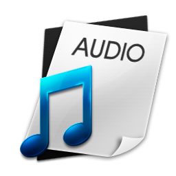
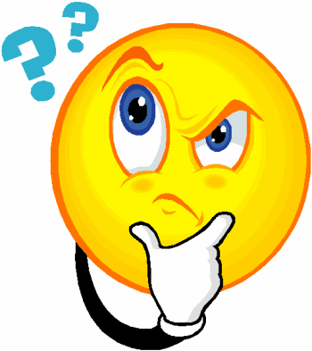

<ion-view style="" id="home" title="Ultimate Self Realization">
    <ion-content class="has-header" overflow-scroll="true" padding="true">
        <ion-list style="">
            <ion-item style="" class="item-thumbnail-left">
                
                <h2>Teachings</h2>
                <p></p>
            </ion-item>
            <ion-item style="" class="item-thumbnail-left">
                
                <h2>Live Lectures</h2>
                <p>Attend live lectures</p>
            </ion-item>
            <ion-item style="" ui-sref="menu.dailyThoughts" class="item-thumbnail-left">
                
                <h2>Daily Thoughts</h2>
                <p>Thought of the day</p>
            </ion-item>
            <ion-item style="" class="item-thumbnail-left">
                
                <h2>Weekly Lessons</h2>
                <p>Weekly Course</p>
            </ion-item>
            <ion-item style="" class="item-thumbnail-left">
                
                <h2>Audio</h2>
                <p>Audio Lectures</p>
            </ion-item>
            <ion-item style="" class="item-thumbnail-left">
                
                <h2>Video</h2>
                <p>Video Lectures</p>
            </ion-item>
            <ion-item style="" class="item-thumbnail-left">
                
                <h2>Got a question?</h2>
                <p>Ask your quesion</p>
            </ion-item>
        </ion-list>
    </ion-content>
</ion-view>